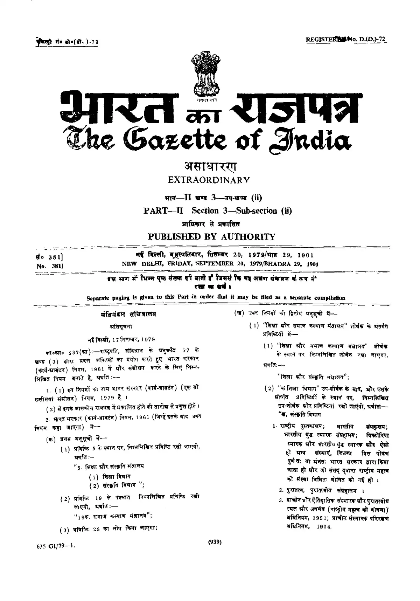
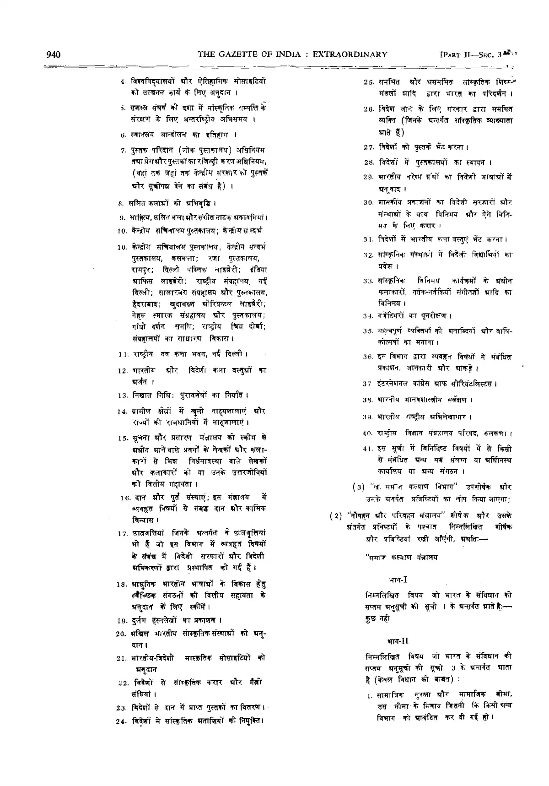
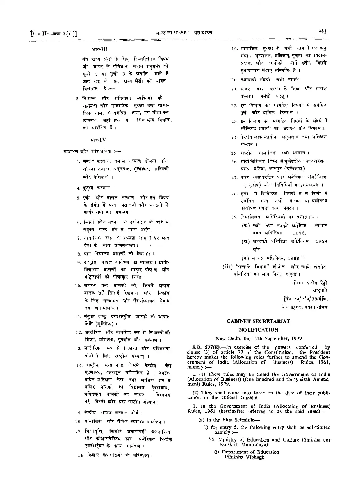
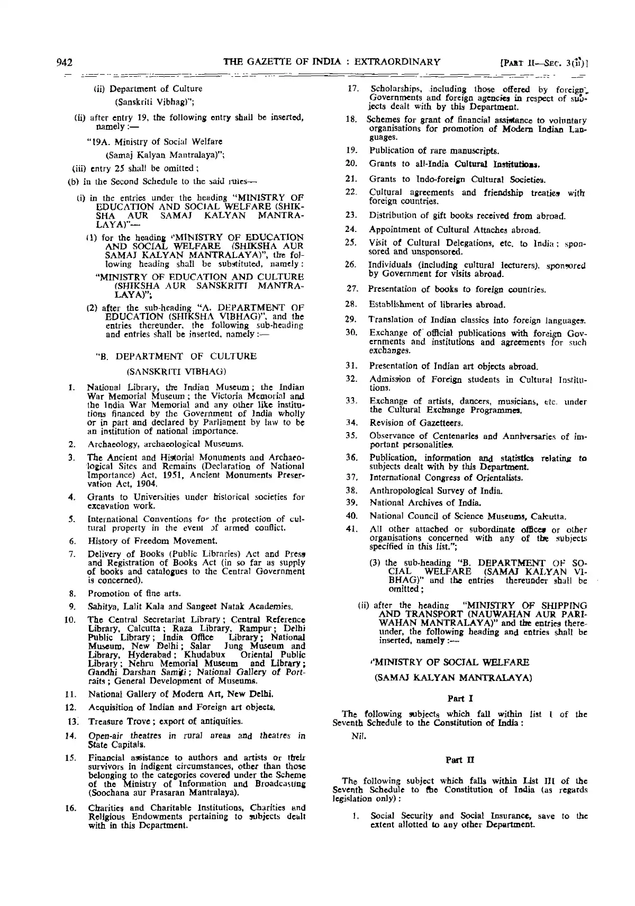
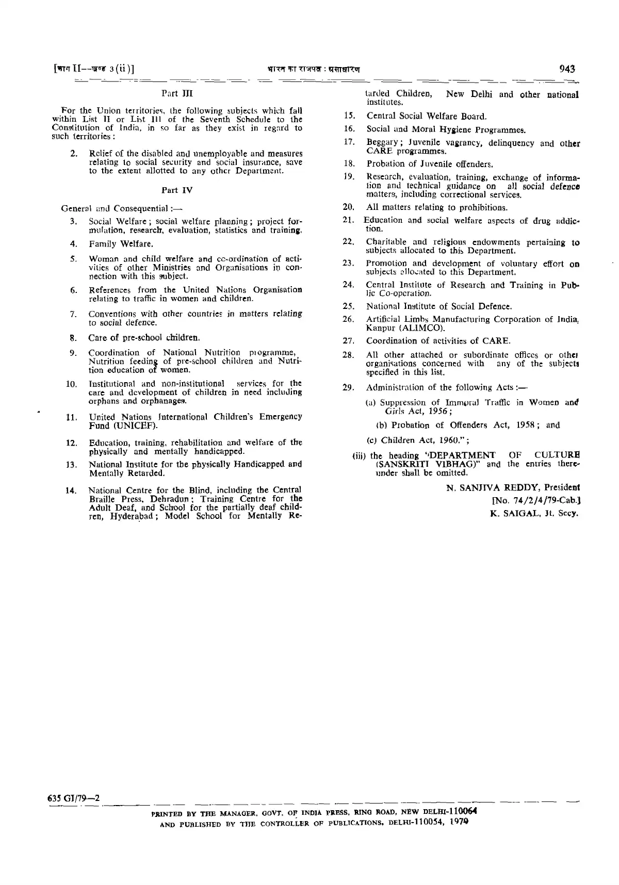

Amendment #136 (S.O. 537(E), 1979)
8 changes: 3 to the First Schedule, 5 to the Second Schedule. 8 applied
What it did to the ministries
- splitMinistry of Education and Social Welfare splits into Ministry of Education and Culture (50) and Ministry of Social Welfare (27) change 1, 2, 4, 5, 6, 7 · histories: Education and Social Welfare, Education and Culture, Social and Women's Welfare
- absorbedDepartment of Culture joins Ministry of Education and Culture (40 subjects) change 3, 4, 5, 6 · histories: Culture, Education and Culture
The order, page by page
Page 1 of 6

Page 2 of 6

Page 3 of 6

1Schedule 1 › entry 5
- 45. Ministry of Education and Culture
- i. Department of Education [Part II—Sec. 3(11)]
- ii. Department of Culture
applied at schedule 1 › ministry 5 in the Rules after #136
read page break
Page 4 of 6

234567after Schedule 1 › entry 19
- 19A. Ministry of Social Welfare
applied at schedule 1 › ministry 19A in the Rules after #136
Schedule 1 › entry 25
applied at schedule 1 › department 25 in the Rules after #136
Schedule 2 › MINISTRY OF EDUCATION AND SOCIAL WELFARE
- MINISTRY OF EDUCATION AND CULTURE (SHIKSHA AUR SANSKRITI MANTRA- LAYA)
applied at schedule 2 › ministry MINISTRY OF EDUCATION AND CULTURE (SHIKSHA AUR SANSKRITI MANTRA- LAYA) in the Rules after #136
after Schedule 2 › MINISTRY OF EDUCATION AND CULTURE › DEPARTMENT OF EDUCATION
- B. DEPARTMENT OF CULTURE
- 1. National Library, the Indian Museum; the Indian War Memorial Museum; the Victoria Memorial and the India War Memorial and any other like institutions financed by the Government of India wholly or in part and declared by Parliament by law to be an institution of national importance.
- 2. Archaeology, archaeological Museums.
- 3. The Ancient and Historial Monuments and Archaeological Sites and Remains (Declaration of National Importance) Act, 1951, Ancient Monuments Preservation Act, 1904.
- 4. Grants to Universities under historical societies for excavation work.
- 5. International Conventions for the protection of cultural property in the event of armed conflict.
and 36 more
- 6. History of Freedom Movement.
- 7. Delivery of Books (Public Libraries) Act and Press and Registration of Books Act (in so far as supply of books and catalogues to the Central Government is concerned).
- 8. Promotion of fine arts.
- 9. Sahitya, Lalit Kala and Sangeet Natak Academies.
- 10. The Central Secretariat Library; Central Reference Library, Calcutta; Raza Library, Rampur; Delhi Public Library; India Office Library; National Museum, New Delhi; Salar Jung Museum and Library, Hyderabad; Khudabux Oriental Public Library; Nehru Memorial Museum and Library Gandhi Darshan Samiti;…
- 11. National Gallery of Modern Art, New Delhi.
- 12. Acquisition of Indian and Foreign art objects.
- 13. Treasure Trove; export of antiquities.
- 14. Open-air theatres in rural areas and theatres in State Capitals.
- 15. Financial assistance to authors and artists or their survivors in indigent circumstances, other than those belonging to the categories covered under the Scheme of the Ministry of Information and Broadcasting (Soochana aur Prasaran Mantralaya).
- 16. Charities and Charitable Institutions, Charities and Religious Endowments pertaining to subjects dealt with in this Department.
- 17. Scholarships, including those offered by foreign Governments and foreign agencies in respect of subjects dealt with by this Department.
- 18. Schemes for grant of financial assistance to voluntary organisations for promotion of Modern Indian Languages.
- 19. Publication of rare manuscripts.
- 20. Grants to all-India Cultural Institutions.
- 21. Grants to Indo-foreign Cultural Societies.
- 22. Cultural agreements and friendship treaties with foreign countries.
- 23. Distribution of gift books received from abroad.
- 24. Appointment of Cultural Attaches abroad.
- 25. Visit of Cultural Delegations, etc. to India; sponsored and unsponsored.
- 26. Individuals (including cultural lecturers), sponsored by Government for visits abroad.
- 27. Presentation of books to foreign countries.
- 28. Establishment of libraries abroad.
- 29. Translation of Indian classics into foreign languages.
- 30. Exchange of official publications with foreign Governments and institutions and agreements for such exchanges.
- 31. Presentation of Indian art objects abroad.
- 32. Admission of Foreign students in Cultural Institutions.
- 33. Exchange of artists, dancers, musicians, etc. under the Cultural Exchange Programmes.
- 34. Revision of Gazetteers.
- 35. Observance of Centenaries and Anniversaries of important personalities.
- 36. Publication, information and statistics relating to subjects dealt with by this Department.
- 37. International Congress of Orientalists.
- 38. Anthropological Survey of India.
- 39. National Archives of India.
- 40. National Council of Science Museums, Calcutta.
- 41. All other attached or subordinate offices or other organisations concerned with any of the subjects specified in this list.
applied at schedule 2 › ministry MINISTRY OF EDUCATION AND CULTURE (SHIKSHA AUR SANSKRITI MANTRA- LAYA) › department B in the Rules after #136
Schedule 2 › MINISTRY OF EDUCATION AND CULTURE › DEPARTMENT OF SO- CIAL WELFARE
applied at schedule 2 › ministry MINISTRY OF EDUCATION AND CULTURE (SHIKSHA AUR SANSKRITI MANTRA- LAYA) › department B in the Rules after #136
after Schedule 2 › MINISTRY OF SHIPPING AND TRANSPORT
- MINISTRY OF SOCIAL WELFARE
- I. PART I
- II. PART II
- 1. Social Security and Social Insurance, save to the extent allotted to any other Department.
- III. PART III
- IV. PART IV
and 30 more
- 3. Social Welfare; social welfare planning; project formulation, research, evaluation, statistics and training.
- 4. Family Welfare.
- 5. Woman and child welfare and co-ordination of activities of other Ministries and Organisations in connection with this subject.
- 6. References from the United Nations Organisation relating to traffic in women and children.
- 7. Conventions with other countries in matters relating to social defence.
- 8. Care of pre-school children.
- 9. Coordination of National Nutrition programme Nutrition feeding of pre-school children and Nutrition education of women.
- 10. Institutional and non-institutional services for the care and development of children in need including orphans and orphanages.
- 11. United Nations International Children's Emergency Fund (UNICEF).
- 12. Education, training, rehabilitation and welfare of the physically and mentally handicapped.
- 13. National Institute for the physically Handicapped and Mentally Retarded.
- 14. National Centre for the Blind, including the Central Braille Press, Dehradun; Training Centre for the Adult Deaf, and School for the partially deaf children, Hyderabad; Model School for Mentally Re- PRINTED BY THE MANAGER, GOVT. OF INDIA tarded Children, New Delhi and other national institutes.
- 15. Central Social Welfare Board.
- 16. Social and Moral Hygiene Programmes.
- 17. Beggary; Juvenile vagrancy, delinquency and other CARE programmes.
- 18. Probation of Juvenile offenders.
- 19. Research, evaluation, training, exchange of information and technical guidance on all social defence matters, including correctional services.
- 20. All matters relating to prohibitions.
- 21. Education and social welfare aspects of drug addic+ tion.
- 22. Charitable and religious endowments pertaining to subjects allocated to this Department.
- 23. Promotion and development of voluntary effort on subjects allocated to this Department.
- 24. Central Institute of Research and Training in Public Co-operation.
- 25. National Institute of Social Defence.
- 26. Artificial Limbs Manufacturing Corporation of India Kanpur (ALIMCO).
- 27. Coordination of activities of CARE.
- 28. All other attached or subordinate offices or other organisations concerned with any of the subjects specified in this list.
- 29. Administration of the following Acts :-
- a. Suppression of Immoral Traffic in Women and Girls Act, 1956
- b. Probation of Offenders Act, 1958; and
- c. Children Act, 1960.
applied at schedule 2 › ministry MINISTRY OF SOCIAL WELFARE in the Rules after #136
read page break
Page 5 of 6

8Schedule 2 › DEPARTMENT OF CULTURE
applied at schedule 2 › department in the Rules after #136
Page 6 of 6
How this document was read
From the Government of India (Allocation of Business) Rules, 1961 and their amendments, as published by the Cabinet Secretariat (cabsec.gov.in), read by orgpedia. The readings of the older scanned gazettes have known gaps.